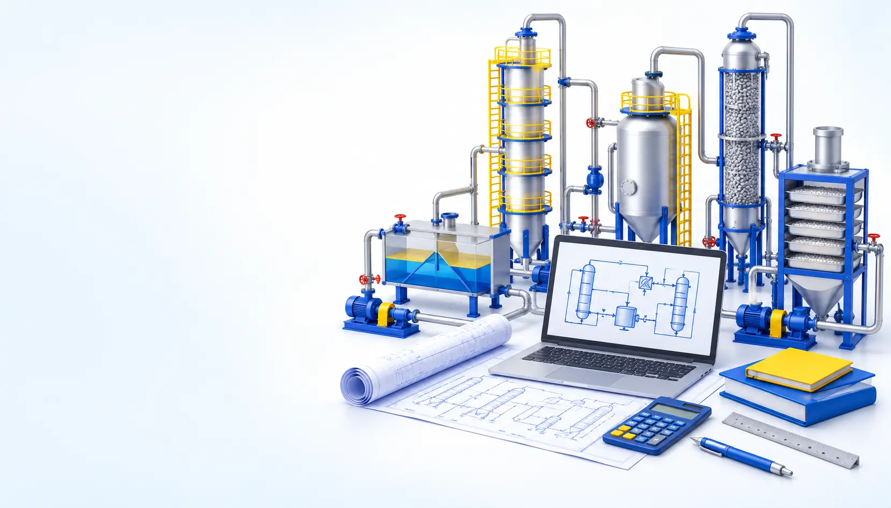

GUIDED UNIT OPERATION DESIGN
Move from a process brief to a defensible preliminary design—one engineering decision at a time.

Mass & energy balance Equipment sizing Design decisionsCompare equipment types and operating modes for six physical separation processes.
Scope, Pick, Establish, Calculate, Test, Review, then Argue and archive.
Use readiness gates, economics and process diagrams to justify the final design.